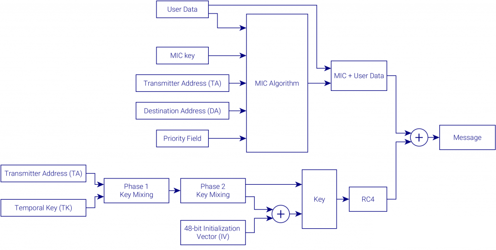

Wi-Fi Protected Access (WPA), en español «Acceso Wi-Fi protegido», es un sistema para proteger las redes inalámbricas (Wi-Fi); creado para corregir las deficiencias del sistema previo, Wired Equivalent Privacy (WEP).1 Los investigadores han encontrado varias debilidades en el algoritmo WEP (tales como la reutilización del vector de inicialización (IV), del cual se derivan ataques estadísticos que permiten recuperar la clave WEP, entre otros). WPA implementa la mayoría del estándar IEEE 802.11i, y fue creado como una medida intermedia para ocupar el lugar de WEP mientras 802.11i era finalizado.
WPA adopta la autenticación de usuarios mediante el uso de un servidor, donde se almacenan las credenciales y contraseñas de los usuarios de la red. Para no obligar al uso de tal servidor para el despliegue de redes, WPA permite la autenticación mediante una clave precompartida, que de un modo similar al WEP, requiere introducir la misma clave en todos los equipos de la red.
TKIP es vulnerable a un ataque de recuperación de keystream, esto es, sería posible reinyectar tráfico en una red que utilizara WPA TKIP.4 Esto es posible por diversas causas, algunas de ellas heredadas de WEP. Entre las causas, cabe destacar la evasión de las medidas anti reinyección de TKIP y se sigue una metodología similar a la utilizada en el popular ataque CHOP CHOP sobre el protocolo WEP.
La evasión de protección anti reinyección de TKIP es posible debido a los diversos canales que se utilizan en el modo QoS especificado en el estándar 802.11ie, aunque también existe la posibilidad de aplicarlo en redes no QoS.